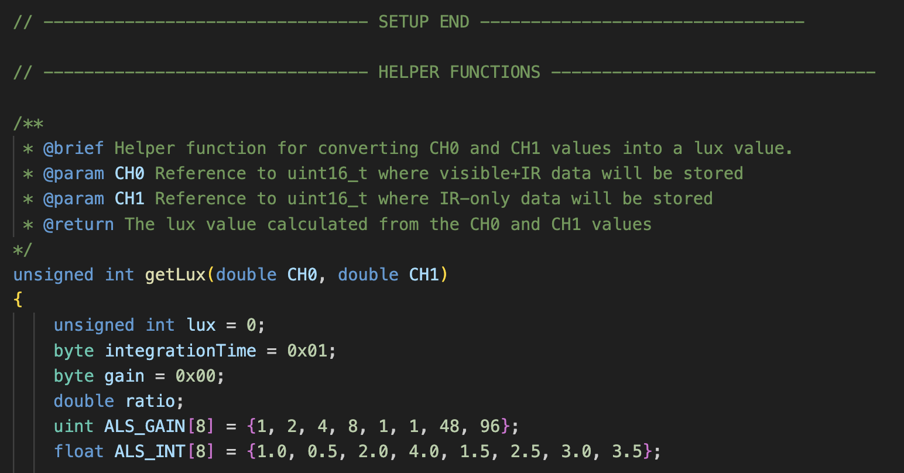
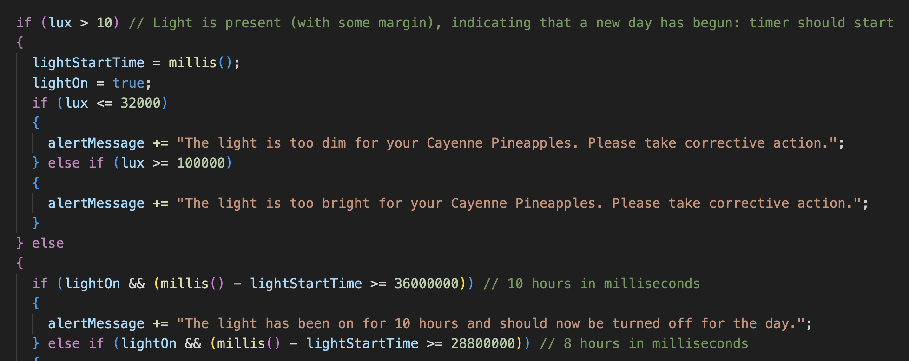

Project Summary
The Greenhouse Monitoring System is an advanced solution designed to optimize the growth conditions of various crops by leveraging a combination of sensors and IoT technology. This system is implemented using Arduino and a suite of sensors from Adafruit, including temperature, humidity, and light sensors.
Through detailed research, I identified key factors influencing the growth of Goldfinger Bananas and Cayenne Pineapples. By integrating sensors to monitor these factors, I created a system that ensures optimal growth conditions. The final product includes real-time data visualization and alerts, enhancing the user experience and efficiency of the greenhouse operations.
Process
Research
I started the task by researching the growing conditions of bananas and pineapples. I found that these fruits can grow together, complementing each other in terms of shade and environmental needs. I then identified which factors could be monitored using ESP32 sensors and selected Thingspeak for cloud data management due to its ease of use and good documentation.
Real World Scenario
In a real-world scenario, the program would be optimized for specific variants of fruits. Based on my research, I chose Goldfinger Bananas and Cayenne Pineapples for their complementary growth needs. Alerts were tailored to ensure optimal growing conditions for these fruits.
MVP to Final Product
After completing the research, I built MVPs for each function, integrating them into a single program. Alerts were added for out-of-range sensor data, and functionality for sending data to Thingspeak was implemented. The final product included a dashboard with gauges for temperature and humidity, enhancing data visualization.
Code Documentation and Structure

The code is well-documented with comments and divided into five main sections: Global variables, Setup, Helper functions, Main functions, and Loop. Each function includes a brief description, making it easier for others to understand the code's structure and functionality.
Alerts

The system includes alerts for various conditions, such as light intensity, temperature, and humidity. A Pushsafer alert notifies users if the greenhouse door remains open, incorporating weather data from the OpenWeatherMap API. This ensures users are aware of any critical conditions affecting the crops.
Cloud Setup
The cloud setup follows the tutorial from Random Nerd Tutorials, with adjustments made for the ESP32. This setup enables real-time data monitoring and storage, providing a comprehensive overview of the greenhouse conditions.
Extending the Solution
To extend the solution to multiple sites, data collection and visualization can be centralized on a single IoT platform. This allows for individual visualizations for each site and advanced analysis through a centralized database.
Libraries Used
The project utilizes several libraries to enhance functionality: